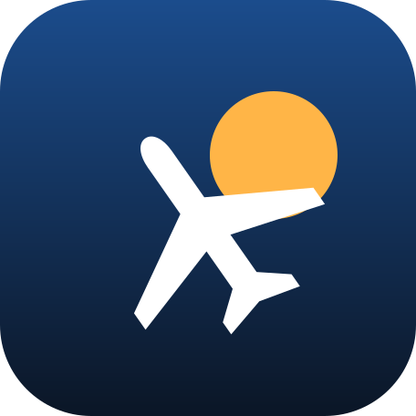

Tiny AirlineSupport
Need help with Tiny Airline? Email TheClubOwnerIos@gmail.com and say which iPhone and iOS version you use. We usually reply within a few days.
How do I start?
The tutorial walks you through it. Tap an airport on the map or open the Routes screen, pick one of the suggested routes and buy the landing licence. Time starts when your first plane takes off.
Why does a route say it's full?
More people want to fly than your planes can carry. Raise the fare, or add another plane to the route from the Routes screen.
Why can't my plane fly somewhere?
Either it's too far for that plane's range, or one of the airports has a runway that's too short. Tap the airport on the map to upgrade its runway.
I bought 4× speed but it's locked
Open the Money screen and tap Restore purchases, signed in with the same Apple ID you bought it with. It works on all your devices and for every airline you start.
Refunds
Purchases are made through Apple, so refunds are handled by Apple at reportaproblem.apple.com.
Where is my game saved?
Only on your iPhone. Deleting the app deletes your airline.